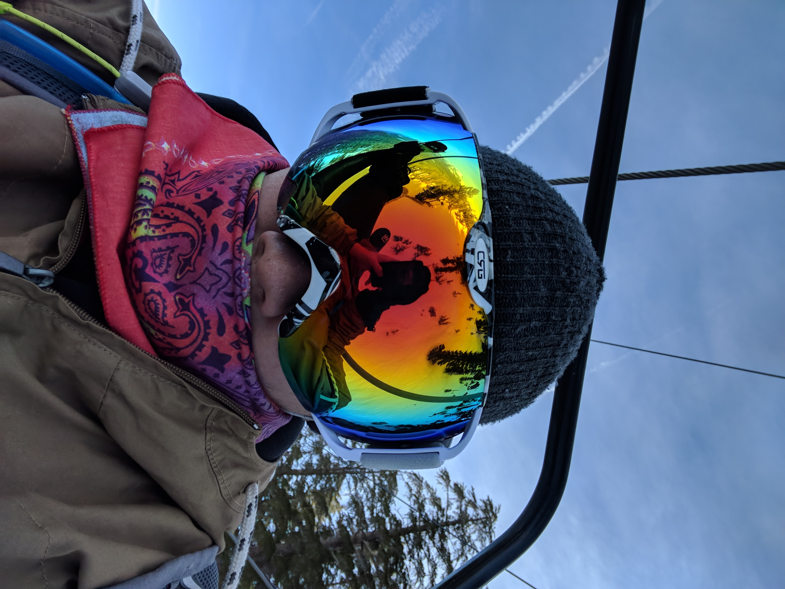

About Me
 =======About Me
Hello admirers! Thanks for taking time to look at my website, dedicated to yours truely. I live in San Juan Capistrano and have lived in Southern California for all my life. I like to snowboard, hike, and anything in the mountains. When there are no mountains, I get to competitve in games. (Video and board games alike.) I have an older sister who lives in New York, as well as my two loving parents. My pride and joy is my dog Shadow, an Australian shepard. He is rediculous too smart. Anyways thats majority of what I'm will to share to stalkers like you. Get to know me!